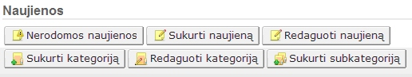
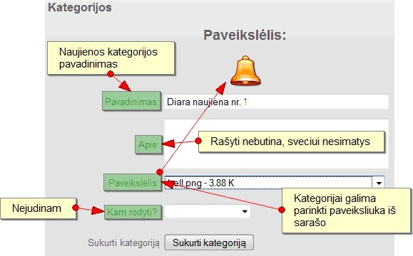
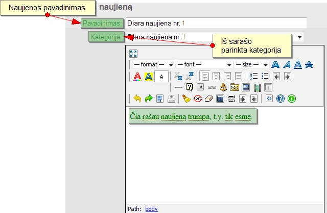
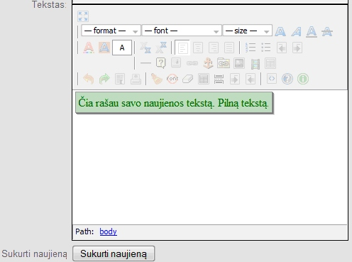

|
Title |
Reason |
|
Title |
Moderator (required) |
|
About |
Description |
|
Image |
relevant (directory: images / icons) |
|
Allow moderate (if not the moderators, a group of wacky blank) |
chosen from which they will be able to administer (dynamic pages). They can sort |
|
The group level |
the higher the number, the worse the level of |
Site Management
Usually, the administrator of the site connects your browser's address field, in addition to their Web site address prirašydamas? Id, 999th For example, your site address http://www.index.lt. So, to connect to the site administration, you only need to address this subjoin the combination, ie http://www.index.lt?id, 999th
This browser's address field, enter takes you to the login page, where you are asked to enter your login information: username and password. By default, the initial management of data access are:
| Username | admin |
| Password | admin |
Participants will take you to the window to the administration panel. For more information see the section below.
In order for any search engine (like Google) is not indexed (neatsimintų) for your website, which is under construction, you must run the site "repair" mode.
The administrative panel, pressing the button "Configure". Window opened, we find the field labeled "Repair" and choose "Yes." It is also recommended to write a "closed site text. For example, enter "repairs".
To change the design of the website, you will need the administration panel, click "Configuration" and the window opened, the line "Design" from the list choose a design you like.
The administrative panel by clicking the button "Configure" should (recommended) to fill the following fields:
Briefly, for each field:
Site name - filling in this field appears in the browser window title, the cover is usually at the top of the site (it may be that not a single location).
Home page - usually enough to leave it as it is. For example, naujienos.php
About - this is your site's description. Usually appears in the menu name such as "About Us" page.
Keywords - the keywords that describe your site's content. The words can be written quite a lot, but steps should be limited to 240 characters.
Copyright inventor or text - is normally supplied with the name, a brief description of the ownership of the Web site authoring rights.
Site e-mail. mail. In this field, enter your e-mail or your company. E-mail address that you had reached the site visitors.
Allow to register. Before you create your site, you must provide a number of things to come. One of them - Registration. If the new user registration is required - choose "Yes", if not - accordingly.
Website repaired - this box to choose "Yes" if the site is closed or not ready for use, if you choose 'No', the site is accessible to the general public and search engines.
All other fields may be completed, but it is not necessary.
Or show sugeneravimo time? Sugeneravimo time - the time during which the data "suvaikšto" in the database and the generated code and the site is presented on the website. These data are visible only to administrators.
Closure of the site text. In this field, followed by the text that will appear when you choose a site close to making that is not accessible to the public.
How to show news? This is also the number indicating how much news will be seen in the title page of your site. Minimum number - five. When the news is over the number of configurations, there is news puslapiavimas. Note: news are arranged from most recent to the oldest written.
Site styles. This list can be chosen from your own site design.
After completing all fields, be sure to click 'Save' button.
Administration, configuration in the form of 'Keywords' box, you have to subjoin as many words related to your site's content (words separated by commas), as well as fill in the fields, "Page Title" and "on"
If you decide that your site will be a registered user, click administration panel, "Pages" and the window opened, select the "Select page" and the list of files, locate and select the file "reg.php.
Each time, writing news, articles, creating galleries category should be selected which group of users will have the right to see the part of the website content. In order pertinent part, that is accessible to all, without exception, at this point neparinkite any groups (left blank).
Creating a site with CMS MightMedia defaults to create two user groups / categories: administrator and member. These categories editable and not deleted.
IMPORTANT: When logging into the site administration, sensitive to different meanings.Consumer rights: category understood as a group of users.
It is possible to create user groups. For example, create the cluster. In order to fill in the form and indicate which pages will be moderate:
| Title | Reason |
| Title | Moderator (required) |
| About | Description |
| Image | relevant (directory: images / icons) |
| Allow moderate (if not the moderators, a group of wacky blank) | chosen from which they will be able to administer (dynamic pages). They can sort |
| The group level |
the higher the number, the worse the level of |
The development of cluster, it is necessary to enable the administration pages "moderatorius.php the page file.
Continue to form "To see?" finding a group of users who will have the right to see this page.
Administrators group "sees" everything is, therefore, to assign certain pages do not need.
MightMedia CMS creates dynamic content on the site, which is based on categories such as news, gallery, articles, forum, links, users.
Site consists of static and dynamic pages. They are all the directory / page. Dynamic pages, such as News, the contents can not edit pages within the control panel. Dynamic content files stored in the database.
Any documents that are uploaded (download), added to the directory / packages. Note. Here you can lie and PHP files, but for security reasons (in some cases) do not recommend this.
Design files are stored in the directory / styles to design subdirektorija name, for example, styles / default.
Directory / panels can be found blocks. To create / insert a block by hand, requires a block of PHP file placed in the directory / panels.
Management of files - the page that the menu of the Forum page - a page directory / gods.
Directory / sandeliukas the query results (cache (Lithuanian cache)). Here the files should not touch. / Sandeliukas used when the configuration is described in "Cache."
Site editor panel:
Here you can see all the pages you create can not because they are systemic. Site Navigation Group - the main site menu. These menu items, you can sort and view the tensile mouse (on the blue arrow).
Icon explanations:
Pencil - the content / text editing.
Screwdriver - administration.
Iksiukas - off the page.
New page creation.
Pressing the Create Page button.
Step 1.
Step 2
News panel:

First you must establish a category!

Then write news.

Note: Each newsletter is not necessary to create a separate category. One category can be assigned to an unlimited quantity of news.
There will always be possible to edit the news well, and category.
Note: Each item to create a separate category is needed. One category can be assigned to an unlimited quantity of items.
Uploading a new picture, be sure to specify a category.
Note: Each photo to create a separate category is needed. One category can be assigned to an unlimited amount of photos.
Add a photo to be as follows:
License: http://code.assembla.com/mightmedia/subversion/nodes/v1/license.txt
ELIGIBILITY server: